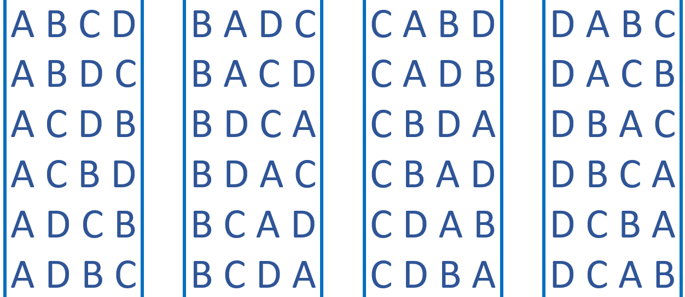
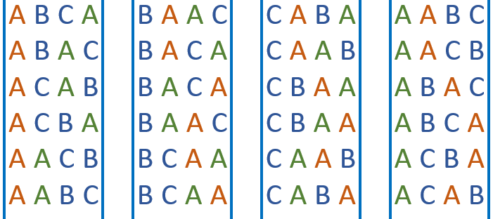
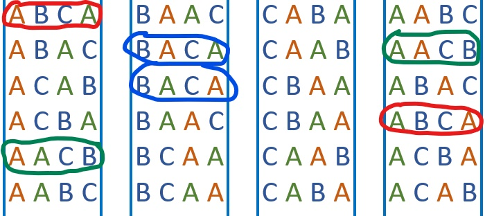
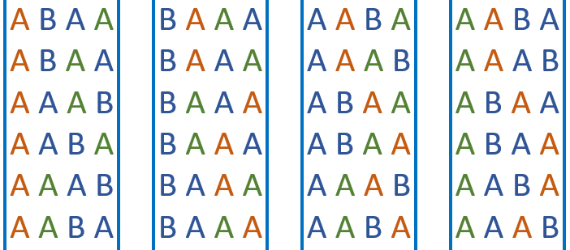
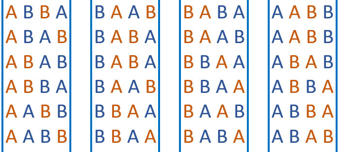
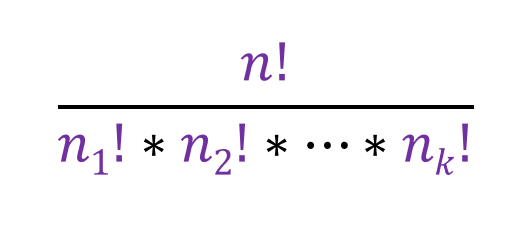

Suppose out of these four letters (A, B, C and D). Using permutations, we know that there are P(4,3) (= 24) ways to do it:
Now lets say I two letters repeated and two unique letters (A, A, B and C). Now how many ways are there of arranging them. If you were to treat the two repeated letters as two unique letters, the arrangements would be the same as above:
There are 4! to arrange 4 letters, but since 2 letters are repeated, all the arrangements will appear 2 times:
The total number of arrangement is (4!/2 =) 12. Now lets try again but with three letters repeated (A, A, A and B):
Since there are 3 letters repeated, then each arrangement will be repeated 3! times; for example consider the arrangement [B A A A], there are 3! of arranging the three A's, so the same arrangement will be repeated 3! times. The total number of unique arrangements is (4!/3! =) 4.
You can probably assume that if you want to find the number of arrangements of n letters, where k letters are repeated, then you should do n!/k!. Now lets say that the letters are (A, A, B and B).
There are 4! ways to arrange 4 letters, but if each arrangment has two A's, then there are (4!/2! =) 12 ways to arrange the letters, and if B is also repeated twice, then there are (12/2! =) 6 ways to arrange the letters. Similarly if there were 6 letters, with two A's and three B's, then the number of ways to arrange the letters is (6!/(2!*3!) =) 60.
We can generalize this and say that the number of arrangements of n objects with n1 identical objects, n2 identical objects, ..., nk identical objects:
